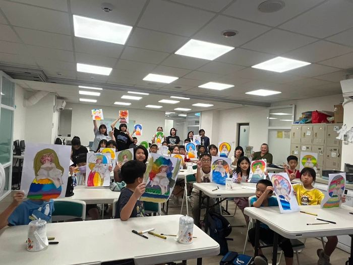
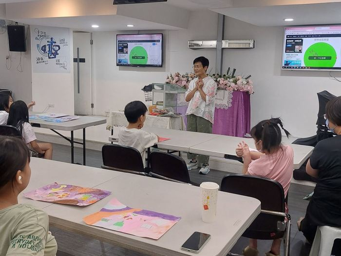
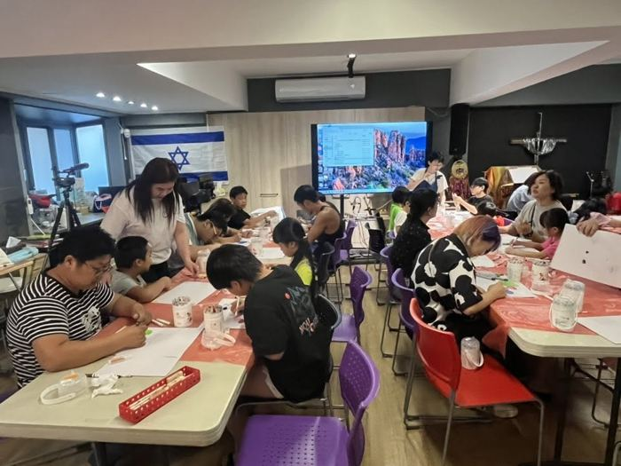

服務方向
我們不以單一標準衡量孩子，而是透過適性的陪伴與教育，協助每個孩子認識自己的特質、建立能力，逐步找到未來可以前進的方向。
兒童藝術陪伴與表達課程
透過繪畫、色彩、創作與團體互動，提供孩子安全表達情緒與經驗的空間。很多孩子不習慣用說的表達，畫畫讓他們多了一種方式。
課程重點
- 鼓勵孩子表達內在感受
- 建立自信與自我認同
- 培養專注力與人際互動能力
- 透過穩定陪伴提升安全感
- 發掘孩子的興趣與潛能
未來亦規劃逐步發展音樂、舞蹈、戲劇及其他藝術表達活動，讓不同特質的孩子都能找到適合自己的學習方式。
活動據點與上課時間
據點持續增加中。想讓孩子參加，或想了解課程內容，歡迎直接聯絡各據點窗口。

板橋明穗據點
明穗教會由陳瑩真牧師帶領，七年來陪伴許多脆弱家庭的孩子，讓他們放學後有地方去、有人照顧。教會地下室一百多坪的空間就像一間課後班教室，孩子從幼稚園到國中二年級都有。微光 2026 年 7 月第一次來到這裡，9 月起每月固定開設藝術陪伴課程。
- 地址新北市板橋區玉光里民生路二段 16-1 號
- 窗口珊妮老師
- 電話02-2964-0021
- 上課時間每月第一週週日 下午 1:00

中壢宣愛據點
微光在桃園的第一個據點，與桃園市宣愛社區關懷協會合作，2026 年 9 月開課。育妏老師帶著小學到國中的孩子，從「心情的顏色」開始認識自己的情緒；10 月，微光也帶這裡的孩子到台北看波特羅特展。
- 地址桃園市中壢區幸福里延平路 98 號 2 樓
- 窗口袁曉惠老師
- 電話03-451-3837
- 上課時間每月第二週週六 下午 1:00

愛鄰希望關懷協會（瑞芳）
這裡是微光的起點。2025 年 8 月，第一個兒童繪畫療癒班在瑞芳開課，與長期服務脆弱家庭、提供課後照顧的愛鄰希望關懷協會合作。孩子們十個月來的作品，2026 年 6 月在台北《微光童心・看見希望》公益畫展展出。
- 地址新北市瑞芳區中正路 61-4 號
- 窗口慕慧老師、湘湘老師
- 電話02-2493-4525
- 上課時間每月第四週週六 上午 10:00
遇到連續假期，上課時間可能調整，出發前請先向各據點窗口確認。
課後學習與多元能力培養
除藝術課程外，協會將依孩子的需求與資源條件，逐步規劃多元的學習支持。
兒童英語課程
從生活化、遊戲化的內容開始，建立基礎的英語能力。
課業陪伴與學習支持
放學後的課業指導與陪讀，補上落後的進度，也讓家長安心。
閱讀與表達訓練
從故事與朗讀開始，練習理解文字、說出自己的想法。
電腦與人工智慧基礎教育
基礎的電腦操作與 AI 工具入門，減少家庭資源造成的落差。
生活教育與品格培養
從生活常規開始，練習照顧自己、尊重別人。
生涯探索與興趣發展
透過活動與探索課程，幫助孩子認識自己的興趣和能力。
家庭支持與親職教育
孩子的改變不能只發生在課堂裡。家庭是孩子最重要的成長環境，我們陪伴的不只是孩子，也包括正在承受壓力、缺乏資源或不知道如何與孩子相處的照顧者。
親職教育與正向教養
- 親職教育課程
- 正向教養講座
- 家庭關係座談
家長支持與共學
- 媽媽教室及家庭支持團體
- 親子共學活動
- 家長讀書會
資源評估與轉介
- 家庭需求評估
- 必要時轉介心理、社福及醫療資源
- 長期陪伴與追蹤
唯有孩子與家庭同時獲得支持，改變才有機會真正延續。
跨專業資源合作
透過跨專業合作，建立更完整的兒少支持網絡，避免孩子因資源分散或資訊落差而被遺漏。我們積極連結：
- 學校與教育單位
- 社福機構
- 兒少服務據點
- 心理諮商與心理健康專業
- 醫療與復健專業
- 藝術教育團隊
- 企業與公益組織
- 中央及地方主管機關
學校、社工或社福單位如有合作或轉介需求，歡迎與我們聯絡。
社會倡議與社區行動
透過義賣、公益講座、藝術展覽、社區活動及大眾教育，我們希望讓社會不再只看見孩子的問題，而是理解問題背後的生命經驗與支持需求。
看見孩子的處境
脆弱家庭兒少的處境、身心障礙與學習差異、受虐與創傷兒少的支持需求。
認識差異與需要
兒少情緒及心理健康、多元兒少的接納與社會參與。
推廣正向教養
推廣正向教養與家庭關係教育，讓更多大人知道怎麼陪伴孩子。